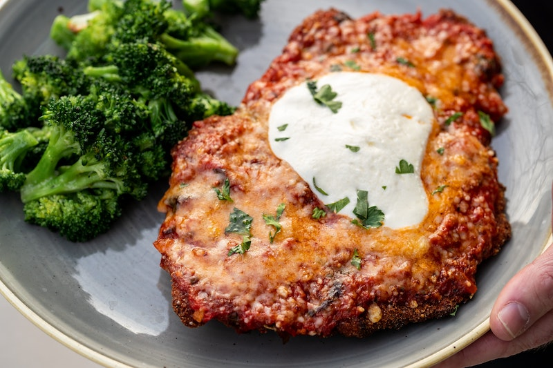

Chicken parmigiana, or chicken parmesan (Italian: pollo alla parmigiana), is a dish that consists of breaded chicken breast covered in tomato sauce and mozzarella, parmesan, or provolone cheese. A quantity of ham or bacon is sometimes added. The dish originated from 20th-century Italian diaspora. It has been speculated that the dish is based on a combination of the Italian melanzane alla Parmigiana, a dish using breaded eggplant slices instead of chicken, with a cotoletta, a breaded veal cutlet generally served without sauce or cheese in Italy. Chicken parmigiana is included as the base of a number of different meals, including sandwiches and pies, and the meal is used as the subject of eating contests at some restaurants.
Chicken parmigiana was known in Australia by the 1950s. It was offered in restaurants in Adelaide as early as 1953. It is regularly served as a main meal throughout Australia, where it is considered a staple of pub food. In a 2019 interview that was broadcast on ABC Radio Hobart, food historian Jan O'Connell believes that chicken parmigiana did not become a pub staple until the 1980s; before that time it was primarily served in restaurants.
Chicken parmigiana is typically served in Australia with a side of chips and salad, although there is some dispute as to whether they should be served under or next to the chicken. Its popularity has led to a specialized chicken parmigiana restaurant opening in Melbourne, and chicken parmigiana is the subject of reviews on dedicated websites which compare the dish as purchased from various pubs within a region. The dish's colloquial name varies across regions, with 'parmy', 'parmi' and 'parma' the most popular variations.